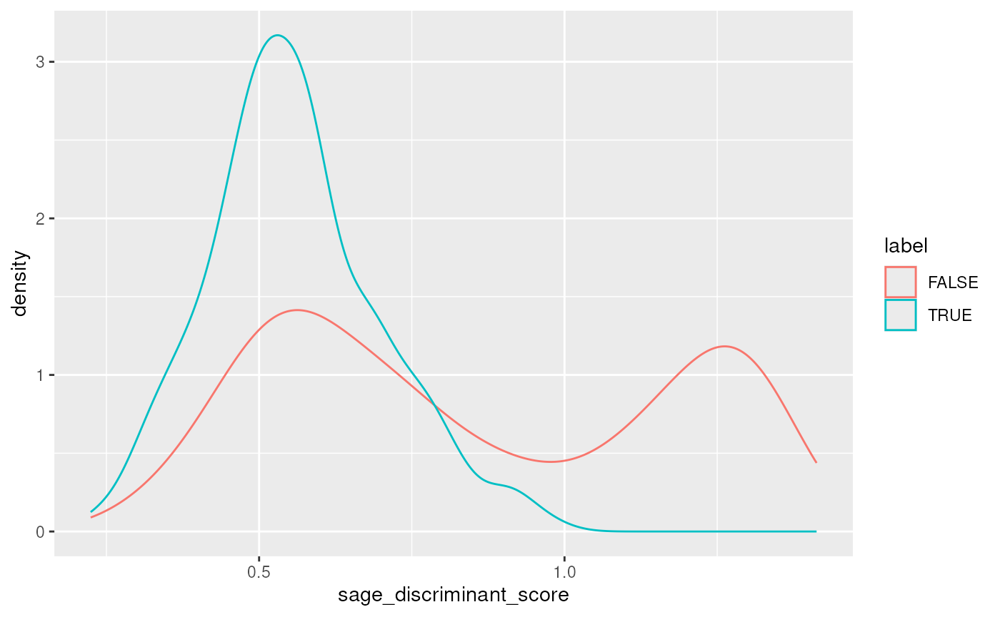

sager package to import
and analyse sage results in Rvignettes/sager.Rmd
sager.Rmdsager package
Sage is a new
cross-platform, extremely performant, open source proteomics search
engine Michael Lazear. It uses
mzML files as input, is parameterised by a json file
and is executed from the command line. In addition to peptide
identification, sage also includes a variety of advanced features such
as retention time prediction and quantification (both isobaric &
LFQ). It produces two files: results.sage.tsv with the
identification results and, when configured to quantify features,
quant.tsv.
The sager package uses these two files as input. It
facilitates their import into established Bioconductor classes:
Identification results are parsed and imported as PSMatch::PSM()
objects with sagePSM().
Quantitation (and identification) results are parsed, merged and
imported as QFeatures::QFeatures()
objects with sageQFeatures().
Sage results can also be integrated with a Spectra::Spectra() instance (holding the raw data) into a MsExperiment::MsExperiment() object, as documented in this document.
The goal of the sager package can thus be summarised as
a way to leverage the existing R for Mass Spectrometry
and Bioconductor infrastructure
to analyse sage results.
To install sager and its dependencies, you’ll need the
BiocManager package, that can be installed from CRAN
(unless you already have it):
if (!requireNamespace("BiocManager"))
install.packages("BiocManager")Note that sager is under constant development, and thus
will depend on some under-development dependencies, that haven’t made it
into the stable releases yet. Here are the instructions to install
these:
To install the devel version of PSMatch:
BiocManager::install("RforMassSpectrometry/PSMatch")To install sager and its dependencies, you can run the
following command:
BiocManager::install("UCLouvain-CBIO/sager")sage results
library(sager)The sager package provides example data
sagerAvailableData()
#> quant id mzml
#> TRUE TRUE TRUE
sagerAddData()
#> 'quant' already available.
#> 'id' already available.
#> 'mzml' already available.For details and provenance of the data, please see the
?sagerData manual page.
library(PSMatch)
psm <- sagePSM(sagerIdData())
psm
#> PSM with 977 rows and 34 columns.
#> Spectra: 595 unique
#> db: 679 target, 298 decoy
#> ranks: 1:977
#> Peptides: 976 unique, 0 multiple
#> Proteins: 947
#> names(34): peptide proteins ... protein_fdr ms1_intensity
library(ggplot2)
data.frame(psm) |>
ggplot(aes(x = hyperscore,
colour = label)) +
geom_density()
data.frame(psm) |>
ggplot(aes(x = spectrum_fdr,
colour = label)) +
geom_density()
psm <- filterPSMs(psm) |>
filterPsmFdr()
#> Starting with 977 PSMs:
#> Removed 298 decoy hits.
#> Removed 0 PSMs with rank > 1.
#> Removed 0 shared peptides.
#> 679 PSMs left.
#> Removed 370 PSMs with FDR < spectrum_fdr.Multiple fractions for the same set of samples:
qf1 <- sageQFeatures(sagerQuantData(), sagerIdData(), splitBy = NULL)
qf1
#> An instance of class QFeatures containing 1 assays:
#> [1] sage: SummarizedExperiment with 977 rows and 11 columns
qf1 |>
filterFeatures(~ label > 0) |>
filterFeatures(~ rank == 1) |>
filterFeatures(~ spectrum_fdr < 0.05) |>
zeroIsNA(1) |>
logTransform(i = 1, name = "log_sage") |>
normalize(i = "log_sage",
name = "norm_sage",
method = "center.mean") |>
aggregateFeatures(i = "norm_sage",
name = "proteins",
fcol = "proteins",
fun = colMedians,
na.rm = TRUE) -> qf1
#> 'label' found in 1 out of 1 assay(s)
#> 'rank' found in 1 out of 1 assay(s)
#> 'spectrum_fdr' found in 1 out of 1 assay(s)
#> Your quantitative data contain missing values. Please read the relevant
#> section(s) in the aggregateFeatures manual page regarding the effects
#> of missing values on data aggregation.
plot(qf1)
qf1
#> An instance of class QFeatures containing 4 assays:
#> [1] sage: SummarizedExperiment with 309 rows and 11 columns
#> [2] log_sage: SummarizedExperiment with 309 rows and 11 columns
#> [3] norm_sage: SummarizedExperiment with 309 rows and 11 columns
#> [4] proteins: SummarizedExperiment with 297 rows and 11 columnsDifferent sets of samples per acquisition:
qf <- sageQFeatures(sagerQuantData(), sagerIdData())
qf
#> An instance of class QFeatures containing 3 assays:
#> [1] subset_dq_00084_11cell_90min_hrMS2_A5.mzML: SummarizedExperiment with 288 rows and 11 columns
#> [2] subset_dq_00086_11cell_90min_hrMS2_A9.mzML: SummarizedExperiment with 353 rows and 11 columns
#> [3] subset_dq_00087_11cell_90min_hrMS2_A11.mzML: SummarizedExperiment with 336 rows and 11 columnsAnnotate data:
renameqf <- function(x) sub("\\.mzML", "", sub("^.+hrMS2_", "", x))
qf$filename <- rep(names(qf), each = 11)
qf$tmt_tag <- rep(paste0("tmt_", 1:11), length(qf))
qf$acquisition <- renameqf(qf$filename)
names(qf) <- paste0("psm", renameqf(names(qf)))
qf <- renamePrimary(qf, paste(qf$acquisition, qf$tmt_tag, sep = "."))
colnames(qf) <- CharacterList(lapply(colnames(qf), renameqf))
qf
#> An instance of class QFeatures containing 3 assays:
#> [1] psmA5: SummarizedExperiment with 288 rows and 11 columns
#> [2] psmA9: SummarizedExperiment with 353 rows and 11 columns
#> [3] psmA11: SummarizedExperiment with 336 rows and 11 columns
colData(qf)
#> DataFrame with 33 rows and 3 columns
#> filename tmt_tag acquisition
#> <character> <character> <character>
#> A5.tmt_1 subset_dq_... tmt_1 A5
#> A5.tmt_2 subset_dq_... tmt_2 A5
#> A5.tmt_3 subset_dq_... tmt_3 A5
#> A5.tmt_4 subset_dq_... tmt_4 A5
#> A5.tmt_5 subset_dq_... tmt_5 A5
#> ... ... ... ...
#> A11.tmt_7 subset_dq_... tmt_7 A11
#> A11.tmt_8 subset_dq_... tmt_8 A11
#> A11.tmt_9 subset_dq_... tmt_9 A11
#> A11.tmt_10 subset_dq_... tmt_10 A11
#> A11.tmt_11 subset_dq_... tmt_11 A11Data processing:
qf |>
filterFeatures(~ label > 0) |>
filterFeatures(~ rank == 1) |>
filterFeatures(~ spectrum_fdr < 0.05) |>
zeroIsNA(1:3) |>
logTransform(i = 1:3, name = paste0("log_", names(qf))) |>
aggregateFeaturesOverAssays(i = 4:6,
fcol = "peptide",
name = sub("psm", "peptide", names(qf)),
fun = colMedians,
na.rm = TRUE) |>
joinAssays(i = 7:9,
name = "peptides") |>
normalize(i = 10,
name = "norm_peptides",
method = "center.mean") |>
aggregateFeatures(i = "norm_peptides",
name = "proteins",
fcol = "proteins",
fun = colMedians,
na.rm = TRUE) -> qf
#> 'label' found in 3 out of 3 assay(s)
#> 'rank' found in 3 out of 3 assay(s)
#> 'spectrum_fdr' found in 3 out of 3 assay(s)
#>
Aggregated: 1/3
#>
Aggregated: 2/3
#>
Aggregated: 3/3
#> Your quantitative data contain missing values. Please read the relevant
#> section(s) in the aggregateFeatures manual page regarding the effects
#> of missing values on data aggregation.
plot(qf)
qf
#> An instance of class QFeatures containing 12 assays:
#> [1] psmA5: SummarizedExperiment with 91 rows and 11 columns
#> [2] psmA9: SummarizedExperiment with 109 rows and 11 columns
#> [3] psmA11: SummarizedExperiment with 109 rows and 11 columns
#> ...
#> [10] peptides: SummarizedExperiment with 308 rows and 33 columns
#> [11] norm_peptides: SummarizedExperiment with 308 rows and 33 columns
#> [12] proteins: SummarizedExperiment with 297 rows and 33 columnsWe have seen above how to import and process identification and quantitation data produced by sage using standard R/Bioconductor tools. Our main goal is to integrate these with the raw MS data that was used to generate them.
Let’s start by importing these raw data into R as a
Spectra object. The three mzML files can be retrieved with
the sagerMzMLData() function.
library(Spectra)
sp <- Spectra(sagerMzMLData())
sp
#> MSn data (Spectra) with 598 spectra in a MsBackendMzR backend:
#> msLevel rtime scanIndex
#> <integer> <numeric> <integer>
#> 1 2 279.184 1
#> 2 2 731.098 2
#> 3 2 736.768 3
#> 4 2 863.610 4
#> 5 2 866.034 5
#> ... ... ... ...
#> 594 2 5155.97 203
#> 595 2 5163.48 204
#> 596 2 5178.80 205
#> 597 2 5179.03 206
#> 598 2 5249.68 207
#> ... 33 more variables/columns.
#>
#> file(s):
#> subset_dq_00084_11cell_90min_hrMS2_A5.mzML
#> subset_dq_00086_11cell_90min_hrMS2_A9.mzML
#> subset_dq_00087_11cell_90min_hrMS2_A11.mzMLWe can now create dedicates keys to identify features in the
different data produced above. Let’s start with the spectra within the
sp object. Later, we will create a similar key in the
QFeatures and PSM objects generated above.
The goal of these keys will be to identify matching features across
data types, such as for example to match de MS spectra to the PSMs and
peptides or proteins. These different data types can be stored together
in an MsExperiment object, and matched through one or
multiple keys.
We can add a key (by default, names .KEY that will
identify a feature/scan by concatenating the scan number and the file in
which that scan was acquired.
sp$filename <- basename(dataOrigin(sp))
sp <- addKEY(sp, vars = c("filename", "spectrumId"))
head(sp$.KEY)
#> [1] "subset_dq_00084_11cell_90min_hrMS2_A5.mzML.controllerType=0 controllerNumber=1 scan=1004"
#> [2] "subset_dq_00084_11cell_90min_hrMS2_A5.mzML.controllerType=0 controllerNumber=1 scan=4181"
#> [3] "subset_dq_00084_11cell_90min_hrMS2_A5.mzML.controllerType=0 controllerNumber=1 scan=4224"
#> [4] "subset_dq_00084_11cell_90min_hrMS2_A5.mzML.controllerType=0 controllerNumber=1 scan=5124"
#> [5] "subset_dq_00084_11cell_90min_hrMS2_A5.mzML.controllerType=0 controllerNumber=1 scan=5144"
#> [6] "subset_dq_00084_11cell_90min_hrMS2_A5.mzML.controllerType=0 controllerNumber=1 scan=5517"Let’s do the same of the PSM object created above:
psm <- addKEY(psm, vars = c("filename", "scannr"))
head(psm$.KEY)
#> [1] "subset_dq_00084_11cell_90min_hrMS2_A5.mzML.controllerType=0 controllerNumber=1 scan=31852"
#> [2] "subset_dq_00087_11cell_90min_hrMS2_A11.mzML.controllerType=0 controllerNumber=1 scan=31961"
#> [3] "subset_dq_00087_11cell_90min_hrMS2_A11.mzML.controllerType=0 controllerNumber=1 scan=16197"
#> [4] "subset_dq_00087_11cell_90min_hrMS2_A11.mzML.controllerType=0 controllerNumber=1 scan=32666"
#> [5] "subset_dq_00086_11cell_90min_hrMS2_A9.mzML.controllerType=0 controllerNumber=1 scan=22318"
#> [6] "subset_dq_00086_11cell_90min_hrMS2_A9.mzML.controllerType=0 controllerNumber=1 scan=11726"And finally, with the QFeatures object.
Running addKEY on a QFeatures object will
only add a key to assays that do have the relevant variables:
sapply(rowData(qf), function(x) ".KEY" %in% names(x))
#> psmA5 psmA9 psmA11 log_psmA5 log_psmA9
#> TRUE TRUE TRUE TRUE TRUE
#> log_psmA11 peptideA5 peptideA9 peptideA11 peptides
#> TRUE TRUE FALSE TRUE FALSE
#> norm_peptides proteins
#> FALSE FALSE
head(rowData(qf[["psmA5"]])$.KEY)
#> 4
#> "subset_dq_00084_11cell_90min_hrMS2_A5.mzML.controllerType=0 controllerNumber=1 scan=10460"
#> 5
#> "subset_dq_00084_11cell_90min_hrMS2_A5.mzML.controllerType=0 controllerNumber=1 scan=10530"
#> 8
#> "subset_dq_00084_11cell_90min_hrMS2_A5.mzML.controllerType=0 controllerNumber=1 scan=10648"
#> 10
#> "subset_dq_00084_11cell_90min_hrMS2_A5.mzML.controllerType=0 controllerNumber=1 scan=10803"
#> 17
#> "subset_dq_00084_11cell_90min_hrMS2_A5.mzML.controllerType=0 controllerNumber=1 scan=11681"
#> 19
#> "subset_dq_00084_11cell_90min_hrMS2_A5.mzML.controllerType=0 controllerNumber=1 scan=11785"Let’s now bundle these three types of data together into and
MsExperiment object:
library(MsExperiment)
mse <- MsExperiment()
spectra(mse) <- sp
qdata(mse) <- qf
mse@otherData$PSM <- psm
mse
#> Object of class MsExperiment
#> Files:
#> Spectra: MS2 (598)Each data element mse is referenced by the same key. We
can now query for such keys direcly on the MsExperiment
object, that will percolate the request to its components.
k <- c("subset_dq_00084_11cell_90min_hrMS2_A5.mzML.controllerType=0 controllerNumber=1 scan=31852",
"subset_dq_00087_11cell_90min_hrMS2_A11.mzML.controllerType=0 controllerNumber=1 scan=32666")
subsetByKEY(mse, k)
#> harmonizing input:
#> removing 132 sampleMap rows not in names(experiments)
#> removing 11 colData rownames not in sampleMap 'primary'
#> Object of class MsExperiment
#> Files:
#> Spectra: MS2 (2)Please open an issue on the package’s Github repository.
#> R version 4.3.0 beta (2023-04-12 r84240)
#> Platform: x86_64-pc-linux-gnu (64-bit)
#> Running under: Ubuntu 22.04.2 LTS
#>
#> Matrix products: default
#> BLAS: /usr/lib/x86_64-linux-gnu/openblas-pthread/libblas.so.3
#> LAPACK: /usr/lib/x86_64-linux-gnu/openblas-pthread/libopenblasp-r0.3.20.so; LAPACK version 3.10.0
#>
#> locale:
#> [1] LC_CTYPE=en_US.UTF-8 LC_NUMERIC=C
#> [3] LC_TIME=en_US.UTF-8 LC_COLLATE=en_US.UTF-8
#> [5] LC_MONETARY=en_US.UTF-8 LC_MESSAGES=en_US.UTF-8
#> [7] LC_PAPER=en_US.UTF-8 LC_NAME=C
#> [9] LC_ADDRESS=C LC_TELEPHONE=C
#> [11] LC_MEASUREMENT=en_US.UTF-8 LC_IDENTIFICATION=C
#>
#> time zone: UTC
#> tzcode source: system (glibc)
#>
#> attached base packages:
#> [1] stats4 stats graphics grDevices utils datasets methods
#> [8] base
#>
#> other attached packages:
#> [1] MsExperiment_1.1.3 Spectra_1.9.15
#> [3] ProtGenerics_1.31.0 BiocParallel_1.33.12
#> [5] scp_1.9.1 QFeatures_1.9.3
#> [7] MultiAssayExperiment_1.25.9 SummarizedExperiment_1.29.1
#> [9] Biobase_2.59.0 GenomicRanges_1.51.4
#> [11] GenomeInfoDb_1.35.17 IRanges_2.33.1
#> [13] MatrixGenerics_1.11.1 matrixStats_0.63.0
#> [15] ggplot2_3.4.2 PSMatch_1.3.3
#> [17] S4Vectors_0.37.6 BiocGenerics_0.45.3
#> [19] sager_0.2.1 BiocStyle_2.27.2
#>
#> loaded via a namespace (and not attached):
#> [1] tidyselect_1.2.0 farver_2.1.1
#> [3] dplyr_1.1.1 blob_1.2.4
#> [5] filelock_1.0.2 bitops_1.0-7
#> [7] SingleCellExperiment_1.21.1 fastmap_1.1.1
#> [9] RCurl_1.98-1.12 lazyeval_0.2.2
#> [11] BiocFileCache_2.7.2 digest_0.6.31
#> [13] lifecycle_1.0.3 cluster_2.1.4
#> [15] RSQLite_2.3.1 magrittr_2.0.3
#> [17] compiler_4.3.0 rlang_1.1.0
#> [19] sass_0.4.5 tools_4.3.0
#> [21] igraph_1.4.2 utf8_1.2.3
#> [23] yaml_2.3.7 knitr_1.42
#> [25] labeling_0.4.2 bit_4.0.5
#> [27] curl_5.0.0 DelayedArray_0.25.0
#> [29] withr_2.5.0 purrr_1.0.1
#> [31] desc_1.4.2 grid_4.3.0
#> [33] fansi_1.0.4 colorspace_2.1-0
#> [35] scales_1.2.1 MASS_7.3-58.4
#> [37] cli_3.6.1 mzR_2.33.1
#> [39] rmarkdown_2.21 ragg_1.2.5
#> [41] generics_0.1.3 httr_1.4.5
#> [43] BiocBaseUtils_1.1.0 ncdf4_1.21
#> [45] DBI_1.1.3 cachem_1.0.7
#> [47] stringr_1.5.0 zlibbioc_1.45.0
#> [49] parallel_4.3.0 AnnotationFilter_1.23.0
#> [51] BiocManager_1.30.20 XVector_0.39.0
#> [53] vctrs_0.6.1 Matrix_1.5-4
#> [55] jsonlite_1.8.4 bookdown_0.33
#> [57] bit64_4.0.5 clue_0.3-64
#> [59] systemfonts_1.0.4 jquerylib_0.1.4
#> [61] glue_1.6.2 pkgdown_2.0.7.9000
#> [63] codetools_0.2-19 gtable_0.3.3
#> [65] stringi_1.7.12 munsell_0.5.0
#> [67] tibble_3.2.1 pillar_1.9.0
#> [69] htmltools_0.5.5 GenomeInfoDbData_1.2.10
#> [71] R6_2.5.1 dbplyr_2.3.2
#> [73] textshaping_0.3.6 rprojroot_2.0.3
#> [75] evaluate_0.20 lattice_0.21-8
#> [77] highr_0.10 memoise_2.0.1
#> [79] bslib_0.4.2 Rcpp_1.0.10
#> [81] xfun_0.38 MsCoreUtils_1.11.6
#> [83] fs_1.6.1 pkgconfig_2.0.3